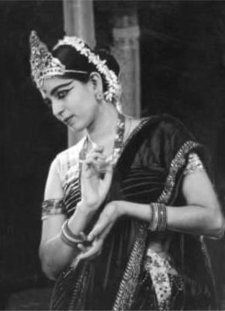
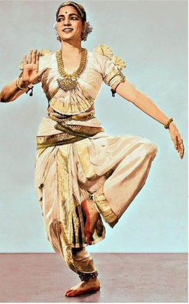
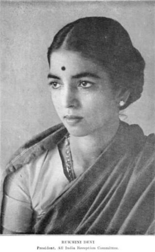
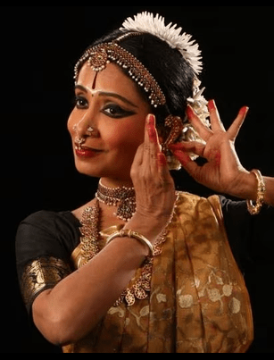
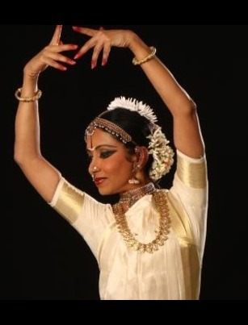
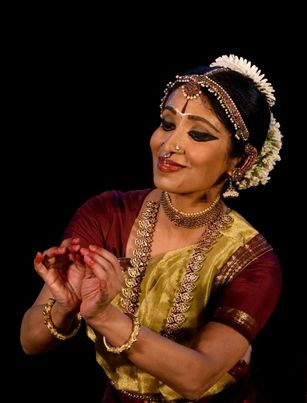
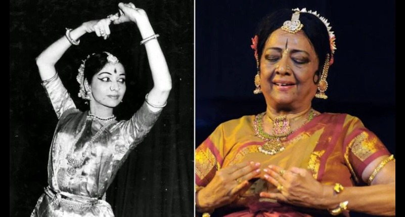
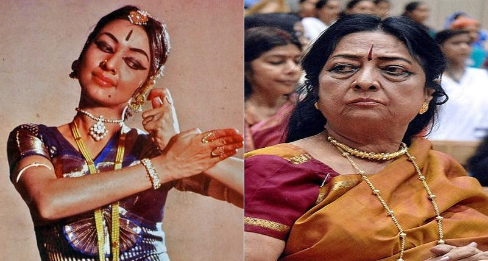
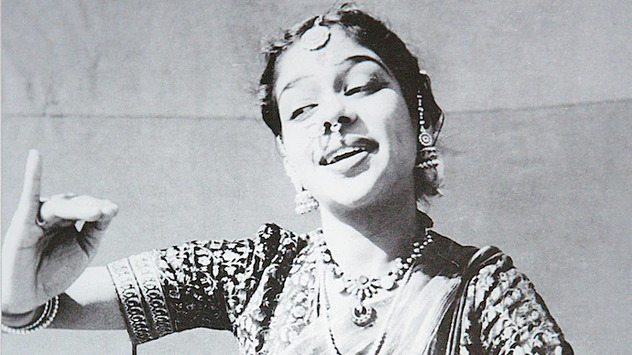
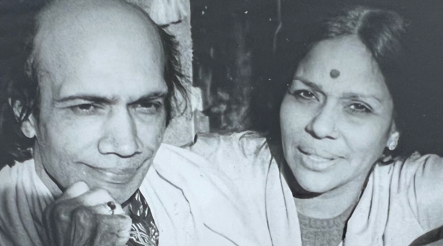

Famous Artists
Rukmini Devi Arundale
Rukmini Devi Arundale was one of the key dancers to revive Bharatanatyam after it was banned by the British during their colonial rule over India. She is credited with disassociating Bharatanatyam from its Devadasi origin, a part of Bharatanatyam she thought was no longer needed. She toured with her husband all over Europe and worked to restore Bharatanatyam to its former glory. Ms. Arundale developed new ways for dancers to wear jewelry, makeup, and costumes. She also expanded and remodeled the instrumental use for Bharatanatyam performances, going from 1 instrument to around 4-5. After her reintroduction and reformation of Bharatanatyam for mainstream audiences all over the world, the era of post-colonial Bharatanatyam began. Her work to modernize Bharatanatyam was highly praised, and Mrs. Arundale was even offered the post of President of India for all her hard work, which she turned down. Up until she died in 1986, Mrs. Arundale created various pieces surrounding ancient Hindu mythological epics and stories, one of which was the "Ramayana," a story that is still well-known today. Mrs. Arundale is known to have had a crucial role in reviving Bharatanatyam and is a vital part of Bharatanatyam's 2000+ years of history.
  Source: Wikipedia. Rukmini Devi Arundale. (https://en.wikipedia.org/wiki/Rukmini_Devi_Arundale), Source: Pinterest. Rukmini Devi Arundale. (https://www.pinterest.ca/pin/133630313924389020/), Source: International Vegetarian Union (IVU). Rukmini Devi Arundale. (http://www.ivu.org/members/council/rukmini-devi-arundale.html)
Alarmel Valli
Ms. Valli is a renowned Bharatanatyam dancer, most famous for her performance at the 1972 International Dance Festival of the Sarah Bernhardt Theatre De La Ville in Paris. Ms. Valli is also the most mainstream Bharatanatyam from her time. She is known for having graceful and extremely feminine movements, all of which attest to her contributions to the Pandanallur style of Bharatanatyam. She is also the youngest recipient of the Padma Shri award, which she received in 1991. Throughout her career, she has performed on stages worldwide and participated in India's most prestigious cultural events. She has been everywhere from Berlin to London, to Chennai and anywhere else in between! Ms. Valli has also appeared on shows and documentaries talking about her career in Bharatanatyam and how it has shaped her as a person. She has worked with various producers and networks, including the BBC and producers such as the great G. Aravindan and Prakash Jha.
  Source: Justdial. Alarmel Valli. (https://www.justdial.com/entertainment/artist/Alarmel-Valli/A428589), Source: Northrop. Alarmél Valli. (https://www.northrop.umn.edu/alarm-l-valli), Source: The Wire. (https://cdn.thewire.in/wp-content/uploads/2021/06/13130321/pic-3-780x1024.jpg)
{kind=link}
Yamini Krishnamurthy
Yamini Krishnamurthy is known for her long-lasting career in Indian classical dances, specifically Bharatanatyam and Kuchipudi, and is recognized for her remarkable skills in both dances. Ms. Krishnamurthy launched her career at the age of 17 and continues to learn, teach, and train regularly, even at the age of 70. She started her journey at the age of 5, where she underwent the tutelage of Ms. Rukmini Devi Arundale. In 1990, she started a school of her own in Chennai, India; she named it the "Yamini School of Dance." She also wrote a book named "A Passion for Dance," which was released in 1995 and received great praise and reviews from both readers and critics. Since her debut performance, she has had the opportunity to perform all over India and around the world and is still highly praised for her work in Indian classical dances.
 Source: Outlook India. The Full Moon Danseuse Who Went on to Shine Like Summer Sun. (https://www.outlookindia.com/website/story/the-full-moon-danseuse-who-went-on-to-shine-like-summer-sun/306188), Source: GNT TV. Happy Birthday, Yamini Krishnamurthy: Indian Classical Dancer (Bharatnatyam & Kuchipudi). (https://www.gnttv.com/entertainment/story/happy-birthday-yamini-krishnamurthy-indian-classical-dancer-bharatnatyam-kuchipudi-485942-2022-12-20)
M.K. Saroja
M.K. Saroja is known for setting Bharatanatyam on a global stage to be enjoyed by people all over the world. M.K. Saroja is remembered for continuing Rukmini Devi's legacy and, even so, not being caught up by fame or money. After her 1940 debut performance, she became very well-known in her community and began performing more often. However, once she became a teacher, she mostly took her time off performing and stayed focused on her students. She was a loyal teacher, training her students to the best of her ability and educating them on other matters as well. From 1970 to 2000, M.K. Saroja remained at the Centre Mandapa in Paris, where she taught various students. After 40 years of teaching, M.K. Saroja retired in 2000. She is remembered as a "Dance Icon" in the Bharatanatyam community and is praised for her unwavering loyalty to her students, many of whom became famous and world-renowned themselves. She passed away in 2022 at the age of 91.
 Source: The Indian Express. Mohan Khokar and his legacy: Dance Historian (Part 1). (https://indianexpress.com/article/lifestyle/art-and-culture/mohan-khokar-dance-historian-7926862/), Source: Madras Mail. Padma Bhushan M.K. Saroja and her journey in dance. (https://themadrasmails.blogspot.com/2022/04/padma-bhushan-mk-saroja-and-her-journey.html)